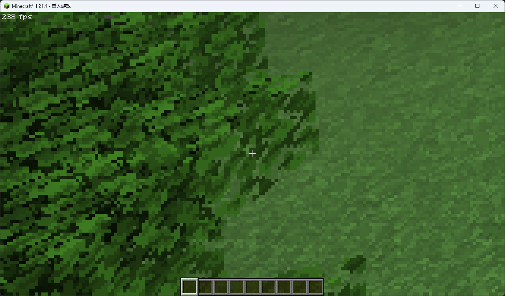
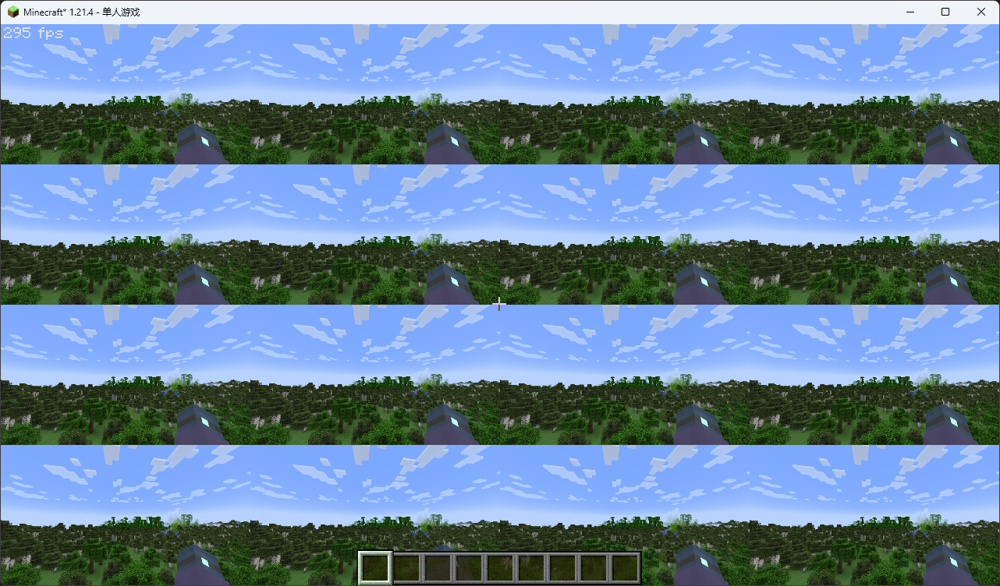
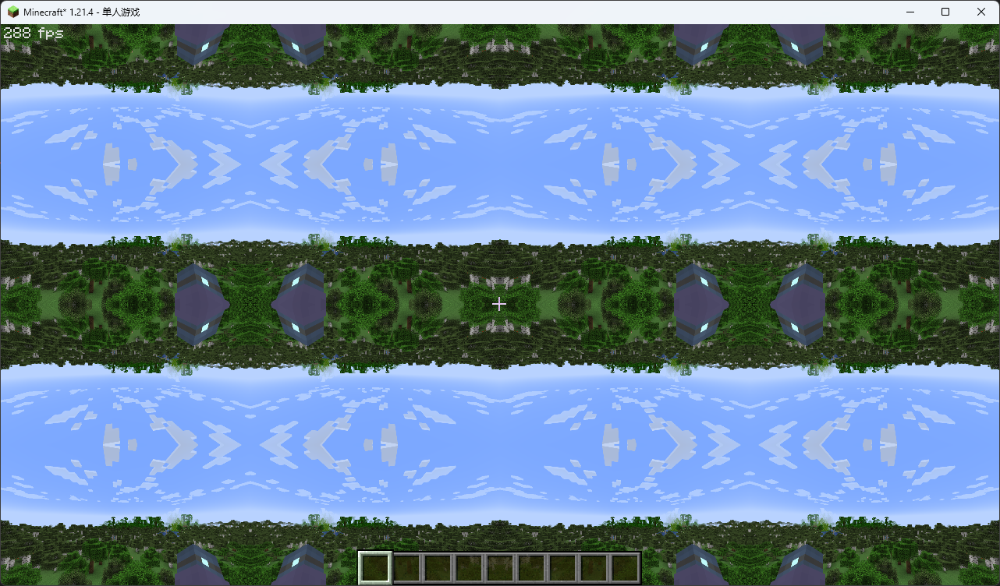
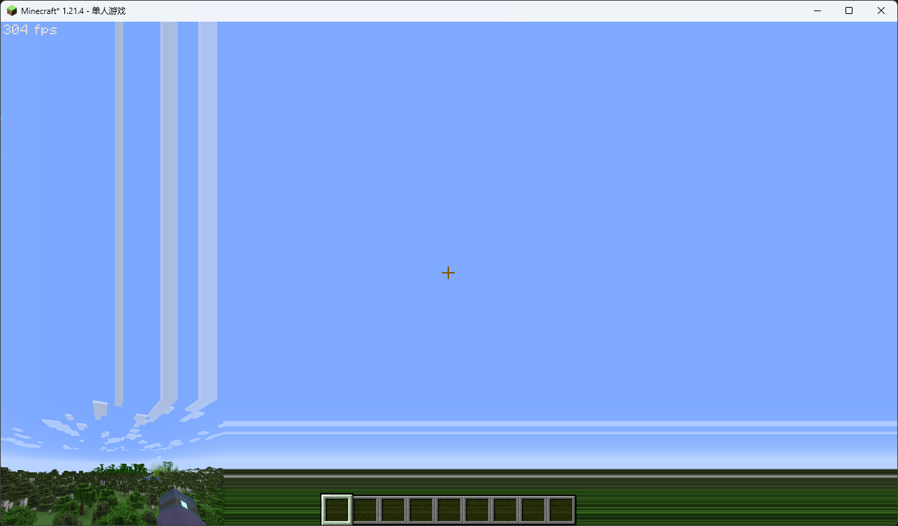
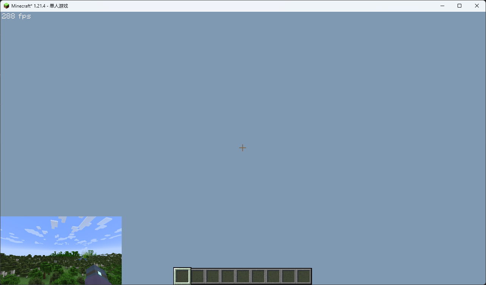

延迟渲染初体验
第一个着色器
还记得 OptiFine 管线输出的最末端是哪个程序吗？没错就是延迟处理程序 final。
它在管线的最末端，并且只有一个输出，从这里开始了解延迟处理阶段再合适不过了。那么现在让我们在工作区先新建 final.vsh 和 final.fsh 来上手试试吧。
铺好画布
还记得我们在 延迟渲染 提到的概念（如果你没看过最好去瞅两眼）吗？延迟处理传入的几何是一个铺屏四边形 ，在 OptiFine 中它覆盖
看起来很多，实际上真正重要的内容只有 vaPosition.xy * 2.0 - 1.0 ，它将顶点从
[1] 在几何缓冲章节我们将详细介绍，在这里你只需要知道 OpenGL 期望所有的顶点坐标都落在
现在，我们就可以在这张空白画布上大展拳脚了。
往上面泼一些颜色
来到我们的片段着色器，随便来一些输出看看效果，比如一些颜色：
然后，你就已经可以在游戏窗口中看到光影的效果了：
哇哦！真的是好……呃，红啊！当然，光靠这种纯色我们甚至无法画出场景，我们需要获取一些几何缓冲绘制好的数据。
采样纹理
缓冲区
在 GLSL 中，我们通过采样纹理来获取颜色数据。在延迟处理中，几何缓冲输出的缓冲区就充当了采样用的纹理。因此我们也可以知道，缓冲区是几何缓冲向延迟处理传递信息的媒介：
OptiFine 提供了至多 16 个（通常我们只用一半）二维缓冲区供我们使用，由于我们没有自己编写几何缓冲，内置管线默认使用向前渲染法将所有场景输出到了 0 号缓冲区 colortex0。
著名哲学家 维吉尔 曾经说过：“ If you wanna it, then you have to take it. ”，如果我们需要采样它，那我们就得先声明它。在 GLSL 中，我们使用采样器 （sampler）类型来声明一个纹理。于是我们的第一行新代码便呼之欲出：
这行代码声明了从 GL 上下文传入的二维纹理 colortex0 ，有了它，我们就能进行接下来的工作了。
坐标
还记得片段着色器是如何执行的吗？它在每个图元覆盖的每个像素上运行一次，然后将处理结果写入指定缓冲区或屏幕的对应坐标。
那么，我们要怎样才能知道当前像素的坐标以采样正确的位置呢？
幸运的是，我们有办法，而且还不止一种。
第一种办法，我们直接利用 OptiFine 提供的顶点属性 vaUV0 ，它提供了当前顶点对应的纹理坐标。
我们只需要在顶点着色器中传入这个变量，然后赋给传出到片段着色器的变量即可：
接着，我们在片段着色器中传入同名变量：
这样，我们就获取到了采样纹理所需要的归一化坐标。
另一种办法，我们可以直接在片段着色器中完成。首先我们需要 GLSL 的另一个内建变量 gl_FragCoord ，它指定了当前像素在窗口内的空间坐标。
由于我们只关注像素在屏幕上的二维位置，因此我们只关心它的 xy 分量。 gl_FragCoord.xy 表示了当前像素在横轴和纵轴上的序号（我们可以将其称之为整数坐标），因此它会随着分辨率的变化而变化。
那么我们应该如何求得其归一化坐标呢？这里我们需要 OptiFine 提供的两个统一变量： viewWidth 和 viewHeight ，它们以像素为单位表示了窗口的宽度和高度。
于是我们的归一化纹理坐标 uv 就可以求得了：
把它们画出来
有了采样器和采样坐标，我们就可以很方便地在 GLSL 中采样纹理了，隆重介绍我们的劳模函数： texture()。
texture() 接受两个参数：采样器和与采样器同维的归一化坐标，它会返回纹理对应坐标上的颜色值。
现在，让我们修改片段着色器，试着向屏幕上输出场景：
What Amazing！我们成功向屏幕输出了 0 号缓冲区的内容！
然而，我们其实不止有一种采样函数。如果你在之前我们用整数坐标求归一化坐标时也想过：有没有更简单的办法，直接用整数坐标进行采样呢？
那么这里就将向你介绍另一个采样函数： texelFetch()。
texelFetch() 和 texture() 很相似（更准确地说是和它的兄弟 textureLod() 更相似），前者接受三个参数：采样器、同维采样整数坐标 ，以及一项额外的 Mipmap 等级。
第三个参数我们在这里不过多展开，你只需要知道它接受一个 int 值用于指定纹理细节等级，从 0 开始，每加 1 纹理的精度就会减半。
值得注意的是， texelFetch() 的第二个参数要求传入整数向量类型（ivec ），而 gl_FragCoord 实际上是浮点向量类型（vec4 ，和它的 w 分量有关，具体见 核心配置中可用的内建变量 ），因此在使用时我们需要进行转换：
和 texture() 不同的是，使用 texture() 进行采样时，由于其使用浮点坐标，如果它的采样坐标在纹理的像素之间就会自动进行插值；而 texelFetch() 由于使用了整型坐标，它的采样点不会产生偏移，也就不会自动插值了。
你可以将它们的坐标参数同时除以一个数（相当于放大纹理）来验证具体区别：
texture()- fragColor = texture(colortex0, uv / 8.0);
texelFetch()- fragColor = texelFetch(colortex0, ivec2(gl_FragCoord.xy) / 8, 0);

可以很明显地看到， texture() 采样出来的画面比较模糊，而 texelFetch() 则棱角分明 ，像素颗颗饱满。
在本教程中，如无必要，我们都将使用 texture()。
纹理边界
既然我们能采样纹理，你们会肯定很好奇：要是采样坐标不在像素中央会怎么样呢？
其实很好想象，因为所有像素的偏移坐标都一样，整个画面都会往一个方向移动……等会？那本来就在纹理边缘的像素会怎样呢？
texture() 期望接受归一化的纹理坐标，因为纹理的尺寸是已知的，总是可以用
因此，OpenGL 为纹理提供了多种边界的处理方式：
GL_Repeat（GL 默认行为）重复纹理内容
GL_MIRRORED_REPEAT重复纹理内容，但是每次都会在对应轴上镜像
GL_CLAMP_TO_EDGE纹理坐标被约束在
之间，超出范围的坐标会重复边缘像素 GL_CLAMP_TO_BORDER纹理坐标被约束在
之间，超出范围的坐标会设置为用户指定的颜色
缓冲区的默认行为是 GL_CLAMP_TO_EDGE 。然而，在 OptiFine 管线中，我们无法控制每个纹理的边缘行为，因此约束坐标就显得很重要了。
我们可以手动实现上述的四种边缘行为，同时附上将画面缩小到纵横各 1/4 的结果：
GL_Repeat将纹理坐标约束在
即可： uv = mod(uv, 1.0);mod()函数用于取第一个参数除以第二个参数的余数，相比%，它支持取浮点余数。 GL_MIRRORED_REPEAT根据重复次数翻转坐标：
ivec2 times = ivec2(abs(floor(uv))); // 取得对应坐标上的循环次数 ivec2 isFlip = times % 2; // 当重复次数为奇数 = 1，偶数 = 0 ivec2 flipMul = 1 - 2 * isFlip; // 用来避免使用 if 的奇怪乘数，isFlip = 1 时翻转 uv 值 uv = vec2(isFlip) + mod(uv, 1.0) * vec2(flipMul);abs()函数用于取绝对值，floor()用于取整数部分。 GL_CLAMP_TO_EDGE（OptiFine 缓冲区默认行为）将坐标直接约束在
： uv = clamp(uv, 0.0, 1.0);clamp()的用法为clamp(变量, 下限, 上限)。 GL_CLAMP_TO_BORDER将大于 1 的坐标替换为常量颜色
const vec4 bgColor = vec4(0.5, 0.5, 0.8, 1.0); float isOutBound = min(abs(floor(max(uv.s, uv.t))), 1.0); // 取坐标中的大值作为混合比例，在纹理范围内取得的整数部分永远是 0，其他的取到后约束最大值到 1。 fragColor = texture(colortex0, uv); fragColor = mix(fragColor, bgColor, isOutBound);mix()的用法为mix(值1, 值2, 混合比例)。其内部实现为，因此混合比例需要约束在 之间。 
最后，我们可以将它们封装成函数，以供我们随时调用。
你可能注意到了，在 uv_clampToColor() 中我们在声明函数参数时使用了 out 关键字，GLSL 允许我们这样做。当 out 在函数中声明时，表示函数中更改的值会原路返还给用作这个参数的变量。
我们可以利用这个特性来进行多个值的初始化：
结果为：
同样的，我们还可以使用 in out 或者 inout 来指定既要带数据来，又会被更改值的参数。
多次采样
另一个你可能会思考的问题是，我们能否采样同一个纹理多次，每次偏移一小段距离，从而绘制出更多效果？
如果你这样想了，那么恭喜你，你已经悟出了着色器中非常重要的采样手法，很多现代特效极其依赖多次采样。
关于多次取样，我们最容易想到的就是模糊 ，因为它的核心思想就是将周围的像素颜色扩散过来。
要想进行模糊，我们最先要做的就是获取周围像素的信息。回想一下坐标，我们不能通过简单的加减整数来获取临近像素的归一化坐标，那么我们要怎样精确地取到它们呢？
答案就藏在之前的统一变量中：我们知道屏幕的尺寸！于是我们变相知道了要步进一个像素，需要在归一化坐标上移动的距离：屏幕尺寸的倒数，即是像素尺寸。
接下来就很简单了，GLSL 支持 for 循环，我们只需要设定最大偏移量就可以采样到周围的信息：
但是值得注意的是，我们这里每次循环采样都把结果给替换了，这样我们永远只能获取到最后一次采样的值，显然违背了初衷。
一个简单的方法是把所有的值累加起来，然后在循环外除以循环次数，这样就求到了平均颜色：
现在让把这个值赋给我们的颜色试试：
和预期一样，画面被轻微模糊了！
还有一个值得注意的点是，边缘的像素偏移采样时由于超出了纹理边界，我们更期望它直接终止循环而不是继续采样。因此我们可以进行一些优化，当纹理坐标在范围外时直接跳过当前循环：
这种边界检测我们会经常使用，因此我们也可以将它封装成函数：
你可能注意到我们这里重载了一个同名函数，这是因为 GL 支持三维纹理。由于 OptiFine 不支持一维纹理，我们这里就不额外重载了。
由于采样数量不一，我们得动态地求平均值，因此还需要增加一个用于计数的变量，于是采样循环就变成了：
最终效果应该是没什么差异的，但是节约了很多无效采样。
宏命令
不知道你有没有发现一个很烦人的事。假如由于模糊效果太轻微，我们现在试图扩大采样数，我们需要怎么做？
比如把每个方向从 5 次采样改成 7 次，我们需要把这两行改！四！次！
万一一不留神改漏一个，效果出现差错，这种合法的编程疏忽可没有编译器给你报错。
你应该已经注意到了，这几个值其实是相同的，那么我们有没有什么办法把它们一起修改呢？
答案就是宏命令 。和 C 一样，GLSL 也支持很多宏命令，其中用得最多、和 OptiFine 设置页面密切相关的就是 #define。
我们只需要在文件开头的版本宏下再添加一行
然后将采样循环中的相关量全部替换
就可以轻松更改采样数了。
现在让我们取每个方向 5 次模糊的较极端的值试试：
和预期一样，模糊的半径更大了！
除了 #define 和之前介绍过的 #version 外，GLSL 还支持下列 C 中的常见宏
以及用以装载 GL 扩展的 #extension。
好了，在这一章中，你已经学会了延迟处理最重要的纹理采样操作，并且封装了几个好用的函数，还认识了一下宏定义。那么在下一章，迎接几何缓冲之前，我们将会把工作区打扫干净，将文件结构整理得井井有条。